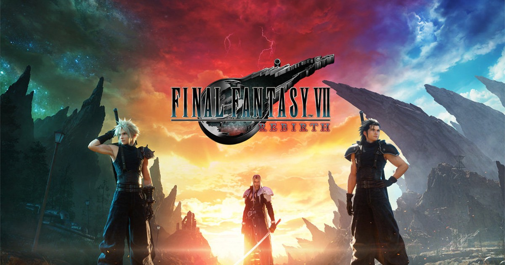

First ever: SiegfriedX hits 10 million Gamerscore — 20 years, 6,400 games, and a Final Fantasy finish
On September 9, at 3:35 in the afternoon, one achievement worth 110 points took a Brazilian systems analyst somewhere no Xbox player had ever been. He planned the exact game it would happen in — and then spent 20 years getting there.

Disclosure: this post contains affiliate links. I earn a commission on qualifying purchases.
On September 9, 2026, at 3:35 p.m. Pacific Time, Marcello Malta unlocked a 110-point achievement and his Gamerscore landed on exactly 10 million. He became the first Xbox player in the world to reach the milestone — just in time for Xbox's 25th anniversary celebrations, according to an Xbox Wire interview published Tuesday.
His gamertag is SiegfriedX. His journey started on the Xbox 360. It took 20 years and more than 6,400 games.
He planned the exact game it would happen in
Malta did not leave the milestone to chance. He wanted to hit 10 million with a game that meant something to him, so he chose to complete the full 1,000G in Final Fantasy VII Rebirth — a franchise he loves. The final achievement, for beating the game on its hardest difficulty, completed the list and brought his total to exactly 10 million.
"I wanted to hit 10 million with a game that meant something to me, something I really loved and that could make the milestone feel even more special," he told Xbox Wire Brazil.
The 42-year-old systems analyst from Brazil describes himself as a completionist first and a record-chaser second. "I like picking up a game and unlocking every achievement, even if the last one is worth just 10 points and takes 500 hours to get. I'm still going to try," he said. Since 2020, he has unlocked at least one achievement every single day.
It was never the plan — until it was
Becoming the first player to 10 million was not always the goal. For years Malta sat second or third in the world, with someone else usually ahead of him. Over time, the players ahead of him stopped chasing — they got tired, or simply decided they did not want to keep going. That left him at 9 million with a real shot at becoming the first person to 10 million, and that is when he started pushing for it.
When the Xbox 360 launched in 2005, the idea of anyone ever reaching 10 million Gamerscore was almost unthinkable. Gamerscore itself was introduced with that console: a running total of the achievement points a player earns across Xbox games, with each game carrying 1,000G worth of achievements in its original list.
The hard road: 600 hours for one achievement
Asked which achievement was the hardest, Malta pointed to Monster Hunter: World. Getting every gold crown — the smallest and largest monster of every species — for the Giant Crown Master achievement took him around 600 hours across the base game and its Iceborne expansion, each worth 1,000G on its own. "It can be really frustrating to play for one, two, or even three days without making any progress because so much of it comes down to luck," he said.
His most enjoyable completion was Diablo II: Resurrected. He played the original obsessively as a teenager, and the remake's level 99 Hardcore achievement — the one he singled out — took him until March 2023, nearly two years after launch.
Only 42 games in his collection remain without a full 1,000G completion, most of them from the Xbox 360 era. And he is not stopping: he is working on Gears of War: E-Day, where two achievements stand between him and Mythic status — 25,000 eliminations in Versus and 50,000 in Horde. Grand Theft Auto VI sits on his most-wanted list for the next full completion.
Mythic Achievements, the new Xbox 25th-anniversary feature that marks a game's original achievement list fully completed, were made for players like him. "When I start a game, I see it through to the end, at least when it comes to the original achievement list," he said. "I've been doing that for more than 10 years."
Sources: Achievement Unlocked: An Interview with the First XBOX Player to Reach 10 Million Gamerscore (Xbox Wire) · First Xbox Player Hits 10 Million Gamerscore After 20 Years (HappyGamer) · First Xbox Player to Hit 10 Million Gamerscore (iGameMag)
Gear up: Razer — mice, keyboards, headsets and laptops.